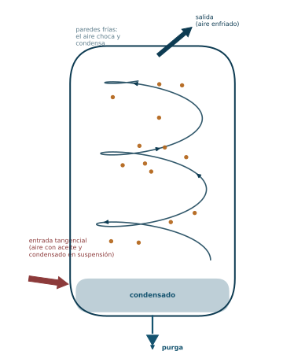
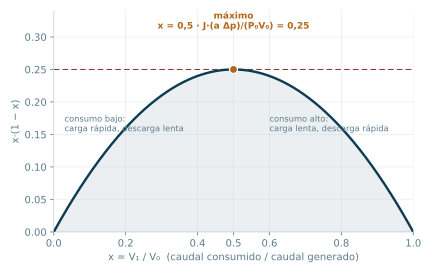
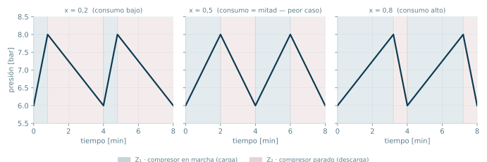

Acumulación: el depósito o pulmón
El compresor entrega un caudal fijo; la planta consume un caudal variable. El depósito desacopla ambos ritmos, atenúa las pulsaciones, separa condensado y fija en qué unidades se miden los caudales de aire comprimido.
Bloque 3 · Apunte de cátedra, páginas 48 a 53 · Ing. Luciano Manavella · Instalaciones Industriales, UTN FRC
De dónde venimos y a dónde vamos
En el Bloque 2 dejamos el aire limpio, frío y seco. Salió del refrigerador posterior, pasó por el secador y por el tren de filtros, y ahora cumple con la clase ISO 8573-1 que el proceso exige.
Pero todavía tenemos un problema que no es de calidad sino de caudal: el compresor entrega un caudal fijo y la planta consume un caudal variable. Nadie usa las herramientas neumáticas de forma pareja durante ocho horas. Hay picos, hay valles, hay minutos en los que no se consume nada.
Ese desajuste entre lo que se produce y lo que se consume es lo que resuelve este bloque. El componente que lo resuelve es el depósito, pulmón o tanque de aire comprimido.
ℹ Lo que tenés que traer del bloque anterior
Tres cosas del Bloque 2 se usan acá todo el tiempo:
- El condensado existe y es un problema mecánico, no una molestia estética. Si llega a las herramientas, oxida, arrastra aceite y arruina juntas.
- La presión absoluta no es la manométrica. En todas las fórmulas de este bloque, P0 es la presión atmosférica absoluta (1,013 bar) y las presiones de trabajo se manejan en absolutas.
- El aire es compresible. Un metro cúbico de aire no dice nada si no aclarás a qué presión y temperatura está medido. De ahí sale el concepto de caudal Normal que se formaliza en este bloque.
✔ Cómo estudiar este bloque para un parcial de opción múltiple
El parcial es de opción múltiple, no de desarrollo. Eso cambia la estrategia de estudio:
- No hace falta que sepas escribir la deducción del volumen del pulmón. Sí hace falta que sepas qué pasa con J si cambia cada variable, porque eso es exactamente lo que se pregunta en un ítem de opción múltiple.
- Los números concretos valen oro: «entre 10 y 50 veces», «0 °C y 1,013 bar», «0,5 a 2 %». Los distractores de un ítem MC casi siempre son el mismo número cambiado.
- Las listas cerradas (las tres funciones del pulmón, los tres tipos de purga) son material de pregunta directa. Hay que saberlas completas y sin agregados.
- Prestá atención a los pares confundibles: Normal vs. FAD, purga de flotador vs. electrónica, atenuar pulsaciones vs. acumular energía. Ahí es donde se arma el distractor bueno.
Objetivos de aprendizaje
Al terminar este bloque deberías poder, sin consultar material:
- Enunciar las tres funciones del pulmón y explicar el mecanismo físico de cada una.
- Justificar por qué el aire entra al pulmón por abajo y en forma tangencial.
- Recordar la regla de dimensionamiento por pulsaciones (10 a 50 veces el volumen del cilindro de la última etapa) y saber a qué tipo de compresor aplica.
- Reconstruir el sentido de la fórmula del volumen del depósito y predecir el efecto de variar Δp, a y x.
- Identificar para qué valor de x el pulmón necesario es máximo, y por qué.
- Definir las tres condiciones de referencia del caudal Normal y convertir un caudal medido a Normal.
- Distinguir purga manual, de flotador y electrónica por su principio de accionamiento y por si requieren energía externa.
Mapa de entrada
Cuatro preguntas resumen el bloque entero. Conviene tenerlas presentes antes de entrar al detalle.
¿Por qué existe?
El caudal generado es fijo; el consumido, variable. Hay que almacenar la diferencia en algún lado.
¿Qué hace?
Atenúa las pulsaciones · separa condensado · acumula energía. Las tres, siempre y a la vez.
¿De qué tamaño?
Balance de energía → J = P₀V₀ / (aΔp) · x(1−x) → máximo en x = 0,5.
¿En qué unidades?
Caudal Normal: 0 °C, 1,013 bar, seco. Adelanto del FAD, que se usa en el Bloque 6.
Una quinta rama, menor, cuelga de «¿Qué hace?»: las purgas — manual, de flotador o electrónica — que sacan el condensado que el pulmón separó.
1. El problema que resuelve el pulmón
Un compresor de desplazamiento positivo entrega, para un régimen de giro dado, un caudal fijo. No sabe modular. La planta, en cambio, consume de forma errática: se accionan tres llaves de impacto a la vez y después nadie usa nada durante dos minutos.
Hay solo tres formas de resolver ese desajuste:
- Poner un compresor tan grande como el pico máximo y dejarlo trabajar contra una válvula la mayor parte del tiempo. Carísimo en energía.
- Hacer que el compresor arranque y pare siguiendo el consumo. Inviable: los arranques del motor eléctrico tienen un límite físico por hora.
- Poner un volumen intermedio que absorba la diferencia. El compresor trabaja a su ritmo, el consumo al suyo, y el pulmón hace de amortiguador entre los dos.
La tercera es la solución de ingeniería, y es la razón de existir del depósito.
ℹ La idea de fondo
El pulmón no genera aire. Lo que hace es desacoplar en el tiempo la producción del consumo. Es el equivalente neumático de un tanque de agua elevado o de un stock intermedio en una línea de producción: convierte un problema de sincronización en un problema de capacidad de almacenamiento.
Además, el pulmón debe estar diseñado para soportar la presión de trabajo y contar con los elementos de seguridad y medición correspondientes: válvula de seguridad y manómetro. No es un recipiente cualquiera: es un recipiente sometido a presión.
2. Las tres funciones del pulmón
El apunte enuncia tres funciones. Son una lista cerrada y son material de pregunta directa.
2.1 Atenuar las corrientes pulsantes
El pulmón se intercala entre la cámara del compresor y el consumo, de manera de amortiguar los picos de presión para que no se produzcan daños en los consumos.
Esta función tiene sentido sobre todo en compresores alternativos a pistón, porque son los que entregan el aire en pulsos: cada carrera de descarga es un golpe de presión, no un flujo continuo. Un compresor de tornillo o un centrífugo entregan un flujo mucho más parejo, así que esta función pesa mucho menos en ellos.
Regla de dimensionamiento por pulsaciones
El tamaño del depósito debe ser entre 10 y 50 veces el volumen del cilindro de la última etapa del compresor. La finalidad es no transmitir la onda de presión a los consumos.
⚠ El detalle que se olvida
No es «10 a 50 veces el volumen del cilindro». Es el volumen del cilindro de la última etapa. En un compresor de dos etapas, el cilindro de baja es mucho más grande que el de alta; si tomás el de baja te sale un tanque enorme y equivocado. La onda de presión que llega al pulmón es la que sale de la última etapa, así que esa es la referencia.
2.2 Separar el condensado y las impurezas
El compresor introduce en el pulmón aire con aceite lubricante y residuos. Se procura que esos condensados no circulen por las cañerías.
El mecanismo es puramente geométrico y funciona así: el chorro de aire se introduce por abajo y luego se traslada tangencialmente, de modo que se produce un efecto ciclón o torbellino. Al tocar el aire las paredes frías del pulmón, los residuos se condensan y caen, liberándose después mediante una trampa. De ahí que sea necesaria la purga periódica del pulmón.
Durante el torbellino también se produce el enfriamiento del aire, que es un efecto secundario útil: aire más frío significa más condensado separado ahí y menos agua viajando por la red.

ℹ Por qué entra por abajo y en tangencial
Son dos decisiones separadas que se combinan:
- Tangencial para que el aire gire. Al girar, las gotas y partículas, que tienen mucha más densidad que el aire, son lanzadas contra la pared por inercia. Es el mismo principio del separador ciclónico del Bloque 2.
- Por abajo para que el agua ya separada caiga al fondo por gravedad y quede lejos de la salida, que está arriba. Si el aire entrara por arriba, arrastraría hacia la salida lo que ya había decantado.
Y las paredes están frías simplemente porque el tanque es una superficie grande de acero en contacto con el aire del ambiente: actúa como un intercambiador pasivo.
2.3 Acumular energía
Los compresores producen un caudal fijo. Si el consumo fuera perfectamente constante e igual al caudal generado, no haría falta pulmón. Pero cuando el consumo cae, el pulmón retiene el aire sobrante; cuando el consumo supera al caudal generado, lo devuelve.
Esta es la función que se traduce en una fórmula de dimensionamiento, y es la que se desarrolla en la sección siguiente.
⚠ Las tres funciones no compiten: coexisten
Un error típico en opción múltiple es elegir «acumular energía» como la función del pulmón y descartar las otras dos. Las tres ocurren siempre y simultáneamente en el mismo recipiente. Lo que cambia es cuál domina el dimensionamiento: en un compresor a pistón chico, la regla de las 10 a 50 veces puede dar un tanque más grande que el que sale del balance energético, y en ese caso manda la regla de pulsaciones.
3. Cálculo del volumen del depósito
El apunte deduce el volumen a partir de un balance de energía entre lo que produce el compresor y lo que absorben los consumos. Vale la pena seguir la deducción, aunque en el parcial no la tengas que escribir, porque la fórmula final se entiende sola si viste de dónde sale.
3.1 Las variables
| Símbolo | Significado | Unidad |
|---|---|---|
| J | Volumen del depósito | m³ |
| P0 | Presión atmosférica | bar |
| Δp | Diferencia entre presión mínima y máxima de trabajo | bar |
| V0 | Caudal entregado por el compresor | N m³/h |
| V1 | Caudal absorbido por los consumos | N m³/h |
| Z1 | Tiempo con el compresor en marcha | h |
| Z2 | Tiempo con el compresor detenido | h |
| Z | Duración total de un ciclo, Z = Z1 + Z2 | h |
| a | Cantidad de ciclos de arranque y parada por hora | 1/h |
| x | Relación entre caudal consumido y caudal generado, x = V1/V0 ≤ 1 | — |
3.2 La deducción, paso a paso
Fase 1: el compresor está en marcha. Durante un tiempo Z1, entrega Z1V0P0 y los consumos absorben Z1V1P0. Como los caudales son distintos, la diferencia se almacena en el depósito:
Δp · J = Z1V0P0 − Z1V1P0 = Z1P0(V0 − V1)
Fase 2: el compresor se detiene. Ahora nadie repone y los consumos vacían el tanque durante un tiempo Z2:
Δp · J = Z2V1P0
Despejando cada tiempo y sumando el ciclo completo, e introduciendo la relación de caudales x = V1/V0, el álgebra se simplifica a un único factor x(1 − x). Si el compresor hace a ciclos por hora, cada ciclo dura Z = 1/a, y se llega a la fórmula final.
Fórmula · volumen del depósito
J = (P0 · V0) / (a · Δp) · x(1 − x)
J en m³ · P₀ y Δp en bar · V₀ en N m³/h · a en ciclos por hora
⚠ Un detalle de la deducción del apunte
En la página 50 el apunte escribe el símbolo de la relación de caudales de una forma que en algunas líneas se lee ambigua. Es una variable, no un producto: acá la llamamos x. Si en el parcial ves esa notación, interpretala como la relación V1/V0.
Además, en el enunciado de la página 50 dice «relación entre caudal generado y caudal consumido», pero la definición matemática que escribe inmediatamente después es x = V1/V0, es decir, consumido sobre generado. Vale la definición matemática. Si un ítem del parcial pregunta qué es x, la respuesta correcta es «caudal consumido dividido caudal generado», que además es la única que respeta la condición x ≤ 1.
3.3 Cómo leer la fórmula (esto es lo que se pregunta)
La fórmula tiene cuatro perillas. Entender cada una vale más que memorizar la expresión.
| Si aumenta… | El volumen J… | Por qué |
|---|---|---|
| V0 (caudal del compresor) | aumenta | Un compresor más grande mueve más aire por ciclo, y ese aire tiene que caber en algún lado. |
| Δp (banda de presión permitida) | disminuye | Si dejás que la presión oscile más, cada metro cúbico de tanque almacena más aire. Un tanque chico con banda ancha guarda lo mismo que uno grande con banda angosta. |
| a (arranques por hora permitidos) | disminuye | Si tolerás más arranques del motor, cada ciclo puede ser más corto y el tanque puede ser más chico. |
| x hacia 0,5 | aumenta | El producto x(1−x) es máximo en 0,5. |
ℹ El caso peor está en x = 0,5
El factor x(1−x) es una parábola invertida que vale cero en x=0 y en x=1, y alcanza su máximo en x = 0,5, donde vale 0,25. Entonces Jmáx = P0V0 / (4·a·Δp).
El significado físico es elegante. Si el consumo es casi nulo (x → 0), el compresor llena el tanque enseguida y después está parado mucho tiempo: la carga es rapidísima. Si el consumo casi iguala a la producción (x → 1), el compresor casi no para y la descarga es lentísima. En los dos extremos, uno de los dos tramos del ciclo se vuelve muy corto, así que el ciclo entero es corto y alcanza con poco tanque.
El caso incómodo es el intermedio: cuando el consumo es exactamente la mitad de lo que produce el compresor, los tiempos de carga y de descarga son iguales y el ciclo es lo más largo posible. Ahí es donde hace falta el tanque más grande. Esto no está escrito en el apunte, pero sale directo de la fórmula y es exactamente el tipo de pregunta que se hace en opción múltiple.

3.4 Un caso numérico
Tomemos una planta que necesita 600 N m³/h (es el mismo caso que va a arrastrarse hasta el Bloque 6), con una banda de presión de trabajo de 2 bar (por ejemplo, arranca a 6 bar y para a 8 bar) y un motor que admite 15 arranques por hora.
Jmáx = (1,013 × 600) / (15 × 2) × 0,25 = 5,07 m³
Y ahora mirá cómo se reparte el ciclo según el consumo real. El ciclo dura siempre 4 minutos, porque a = 15 ciclos/h lo impone; lo que cambia es cómo se reparte entre marcha y parada, y el tanque más grande es el que necesita el reparto simétrico.
| x | V₁ [N m³/h] | x(1−x) | J [m³] | Z₁ (marcha) | Z₂ (parada) | Ciclo |
|---|---|---|---|---|---|---|
| 0,2 | 120 | 0,16 | 3,24 | 0,8 min | 3,2 min | 4 min |
| 0,5 | 300 | 0,25 | 5,07 | 2,0 min | 2,0 min | 4 min |
| 0,8 | 480 | 0,16 | 3,24 | 3,2 min | 0,8 min | 4 min |

Calculadora de volumen de pulmón
Poné el caudal del compresor, la banda de presión, los arranques por hora admitidos y la relación de caudales, y obtené el volumen necesario. P₀ queda fija en 1,013 bar.
3.5 El camino gráfico
El apunte aclara que también existen gráficos que permiten determinar el volumen del depósito sin usar la fórmula (Fig. 48, p. 51). Son ábacos de fabricante: entrás con el caudal, la banda de presión y los arranques por hora, y leés el volumen. En un parcial de opción múltiple, lo que importa es saber que las dos vías existen y son equivalentes, no reproducir el ábaco.
4. Unidades: el caudal Normal
Acá el apunte hace una advertencia que conviene tomarse en serio: hay que ser cuidadoso con las unidades del caudal porque estamos frente a un fluido compresible.
Cuando en un catálogo ves «N m³/h» o «N l/s», esa N no es decorativa: significa que el caudal está expresado en condiciones Normales de presión y temperatura.
Condiciones normales de referencia
- Medido a nivel del mar, es decir, con presión absoluta de 1,013 bar (a).
- Seco: el valor de caudal no incluye el vapor de agua.
- Temperatura 0 °C.
La conversión de un caudal medido en condiciones cualesquiera a caudal Normal es:
QN = Q × [273 / (273 + T)] × [P / 1,013]
donde Q es el caudal volumétrico dato en l/s, T la temperatura dato en °C y P la presión de trabajo dato en bar absolutos.
ℹ Qué está haciendo realmente esa fórmula
No está convirtiendo unidades de volumen. Está convirtiendo un volumen en una masa disfrazada de volumen.
Un metro cúbico de aire a 7 bar contiene siete veces más moléculas que un metro cúbico a 1 bar. Si dos catálogos dan caudales medidos a presiones distintas, no se pueden sumar ni comparar. La condición Normal es simplemente un acuerdo: «digamos todos cuánto ocuparía esa misma masa de aire si estuviera a 0 °C y 1,013 bar, seca». A partir de ahí, los números son comparables y sumables.
Es la ley de los gases ideales, PV/T = cte, escrita como regla de conversión.
Ejemplo. Un caudalímetro marca 100 l/s en una línea a 7 bar absolutos y 30 °C:
QN = 100 × (273/303) × (7/1,013) = 100 × 0,901 × 6,910 = 622,6 N l/s
El mismo aire, expresado en condiciones normales, «ocupa» más de seis veces más. Tiene sentido: al llevarlo de 7 bar a 1,013 bar, se expande.
⚠ Los dos errores de signo que se cometen siempre
- La temperatura va invertida y la presión derecha. Multiplicás por 273/(273+T) (0 °C arriba) y por P/1,013 (la presión dato arriba). Si te confundís y lo ponés al revés, el resultado sale mal por un factor que a 30 °C es de 1,23. En un ítem MC ese número mal calculado suele estar entre las opciones.
- La presión tiene que ser absoluta. Si el manómetro marca 7 bar, la presión absoluta es 8,013 bar, no 7. El apunte plantea la fórmula con «presión de trabajo dato (bar Abs.)»: leelo literal.
ℹ Ampliación Ampliación — Normal no es lo mismo que FAD
En el Bloque 6, cuando haya que seleccionar el compresor, aparece una segunda referencia: el FAD (Free Air Delivery, aire libre suministrado), definido a 20 °C y 1,00 bar según ISO 1217.
La relación entre ambos es QFAD = QN × (293/273) × (1,013/1,00) ≈ 1,087 · QN.
O sea que el número en FAD siempre es aproximadamente un 9 % mayor que el mismo aire expresado en Normal, porque el aire de referencia FAD está más caliente y a menor presión, y por lo tanto ocupa más volumen. Misma masa, distinto número. Confundir Normal con FAD es la trampa clásica de este tema, y aparece tanto acá como en el Bloque 6.
5. Purgas
El pulmón separa condensado. Alguien tiene que sacarlo. Ese alguien es la purga, y el apunte distingue tres tipos.
5.1 Purga manual
Un operario debe accionarla para que libere el condensado. Típicamente es un botón pulsador: se aprieta, sale el condensado; se suelta, el purgador se cierra (Fig. 49, p. 52). Ventaja: simplicidad y costo nulo de operación. Desventaja evidente: depende de que alguien se acuerde.
5.2 Purga automática de flotador
Se acciona sola cuando el condensado alcanza un nivel determinado (Fig. 50, p. 52). El flotador sube con el líquido y abre el drenaje.
ℹ La ventaja distintiva del flotador
No requiere energía para su accionamiento. Trabaja únicamente con el empuje del propio líquido y con la presión de la línea. Este es el dato que hay que retener: es lo que la separa de la purga electrónica y es material de pregunta directa.
5.3 Purga electrónica
A diferencia de la anterior, sí requiere energía eléctrica (Fig. 51, p. 53). El circuito de funcionamiento que describe el apunte es:
- El condensado entra en el depósito colector (2) por el conducto de entrada (1).
- El sensor de nivel (3) avisa al sistema de control cuando se alcanza el nivel máximo.
- El control abre la válvula solenoide (4) y el conducto piloto (6).
- La compensación de presión resultante hace que se abra la membrana de la válvula (5).
- El condensado sale del depósito colector por el conducto de salida (8) al exterior del drenaje.
- Al alcanzarse el nivel mínimo, el control cierra la solenoide; cambian las presiones sobre la membrana, que se vuelve a cerrar por acción del resorte (7).
ℹ Ampliación Ampliación — Por qué se paga una purga electrónica si el flotador es gratis
Porque el flotador es un elemento mecánico sumergido en un líquido sucio, con aceite y partículas. Se traba. Cuando se traba abierto, se está fugando aire comprimido las 24 horas, que es la fuga más cara que puede tener una planta; cuando se traba cerrado, el condensado se acumula y termina viajando por la red.
La purga electrónica, al usar un sensor de nivel y una solenoide, abre solo el tiempo necesario y puede reportar falla. En instalaciones grandes, la diferencia de costo se paga sola con el aire que no se pierde. En el Bloque 6 vas a ver que el apunte fija un tope de fugas del 5 al 10 % de la capacidad instalada: las purgas trabadas son uno de los responsables habituales de superar ese número.
6. Datos duros para memorizar
Esta es la tabla que conviene tener leída el día antes del parcial.
| Dato | Valor | Contexto |
|---|---|---|
| Tamaño del depósito por pulsaciones | 10 a 50 veces el volumen del cilindro de la última etapa | Sobre todo en compresores alternativos a pistón |
| Presión atmosférica de referencia | 1,013 bar (a) | P₀ en la fórmula del pulmón |
| Condiciones Normales | 0 °C, 1,013 bar (a), seco | Referencia del caudal N m³ |
| Condiciones FAD (ISO 1217) | 20 °C, 1,00 bar (a) | Se usa en Bloque 6 |
| Relación FAD / Normal | QFAD ≈ 1,087 · QN | FAD siempre da un número mayor |
| Valor de x que exige el mayor pulmón | x = 0,5, donde x(1−x)=0,25 | Caso de dimensionamiento |
| Funciones del pulmón | Tres: atenuar pulsaciones, separar condensado, acumular energía | Lista cerrada |
| Elementos de seguridad y medición | Válvula de seguridad y manómetro | Recipiente sometido a presión |
| Purga que no requiere energía | De flotador | La electrónica sí requiere |
7. Trampas típicas de opción múltiple
| Se confunde… | Con… | Cómo distinguirlos |
|---|---|---|
| Caudal Normal | Caudal FAD | Normal: 0 °C y 1,013 bar. FAD: 20 °C y 1,00 bar. FAD da un número ~9 % mayor. |
| Volumen del cilindro de la última etapa | Volumen del cilindro (a secas) o cilindrada total | La regla 10–50 se aplica al de la última etapa. |
| x = V₁/V₀ | x = V₀/V₁ | Tiene que ser ≤ 1: el consumo va arriba. |
| «Aumenta Δp ⇒ tanque más grande» | Lo correcto: más chico | Δp está en el denominador. |
| «Aumenta a ⇒ tanque más grande» | Lo correcto: más chico | a está en el denominador. |
| Atenuar pulsaciones | Acumular energía | La primera es un problema de onda de presión; la segunda, de balance de caudal. |
| Purga de flotador | Purga electrónica | El flotador no consume energía; la electrónica sí. |
| El aire entra al pulmón por arriba | Entra por abajo y tangencialmente | Para que el agua decante lejos de la salida y para generar el efecto ciclón. |
En resumen
El compresor entrega caudal fijo; la planta consume caudal variable. El pulmón desacopla ambos ritmos.
Cumple tres funciones simultáneas. Atenúa las corrientes pulsantes, sobre todo en compresores a pistón, y por eso se recomienda un volumen de 10 a 50 veces el del cilindro de la última etapa. Separa condensado e impurezas: el aire entra por abajo y en forma tangencial, gira en efecto ciclón, choca contra las paredes frías, y lo que condensa cae al fondo y se elimina por purga periódica. Acumula energía: retiene el aire sobrante cuando el consumo cae y lo devuelve cuando el consumo sube.
El volumen se calcula por balance de energía entre lo producido y lo consumido: J = P₀V₀/(aΔp) · x(1−x). Se lee así: más caudal ⇒ más tanque; más banda de presión permitida ⇒ menos tanque; más arranques por hora tolerados ⇒ menos tanque. El factor x(1−x) es máximo en x=0,5, así que el caso de dimensionamiento es aquel en que el consumo vale la mitad de la producción, porque ahí el ciclo de carga y descarga es el más largo posible.
Los caudales se manejan en condiciones Normales: 0 °C, 1,013 bar absolutos, aire seco. Se convierte con QN = Q·[273/(273+T)]·[P/1,013], con P en absolutas.
El condensado separado se elimina con purgas: manuales (botón pulsador), automáticas de flotador (no requieren energía) o electrónicas (sensor de nivel, solenoide, membrana; sí requieren energía eléctrica).
Y el pulmón, por ser un recipiente sometido a presión, lleva siempre válvula de seguridad y manómetro.
Banco de preguntas de opción múltiple
Formato tipo parcial. Respondé una a la vez: el feedback aparece apenas elegís una opción.
Conexión con el Bloque 4
Ya tenemos el aire generado (Bloque 1), tratado (Bloque 2) y almacenado a presión estable (este bloque). Falta llevarlo hasta donde se usa.
Y ahí aparece un problema nuevo. Hasta acá el aire estuvo quieto o casi quieto dentro de recipientes. En el Bloque 4 va a circular por kilómetros de cañería, y circular tiene un costo: pérdida de carga. Cada metro de caño, cada codo y cada te se cobran en bar. Además, el condensado que el pulmón no alcanzó a separar va a viajar con el aire, y hay que darle un camino para que se vaya en vez de acumularse en los puntos bajos.
El Bloque 4 responde entonces tres preguntas: cómo se organiza la red (principal, secundarias, de servicio), qué topología conviene (abierta o cerrada) y de qué material se hace.
◆ Figuras del apunte pendientes de incorporar
Estas figuras están citadas en el texto pero todavía no se recortaron del PDF de cátedra: Fig. 47 (p. 48, vista general del pulmón), Fig. 48 (p. 51, ábaco para el volumen del depósito), Fig. 49 (p. 52, purga manual), Fig. 50 (p. 52, purga de flotador) y Fig. 51 (p. 53, purga electrónica con las referencias 1 a 8). Los tres gráficos de elaboración propia de este bloque (parábola x(1−x), ciclo de presión y esquema del ciclón) ya están incorporados arriba.
Bloque 3 de la unidad de Aire Comprimido · Instalaciones Industriales · Ing. Luciano Manavella · UTN Facultad Regional Córdoba.
Figuras 47 a 51 del apunte de cátedra, pendientes de recortar e incorporar. Los gráficos en color son de elaboración propia.